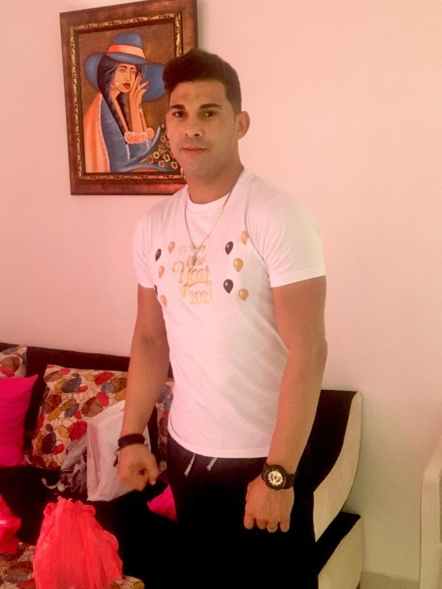
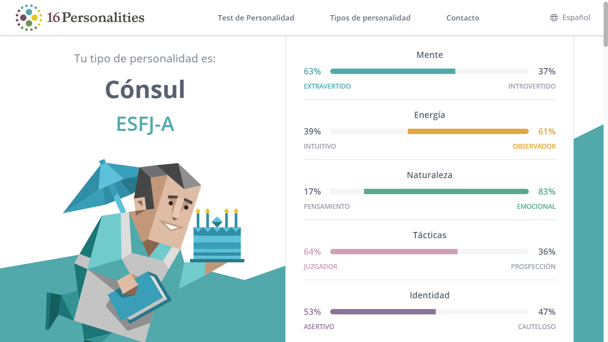
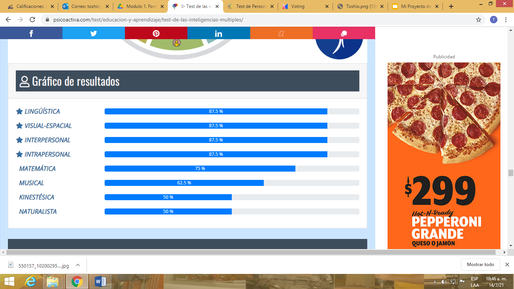
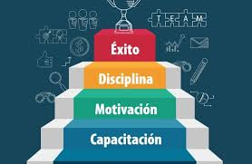
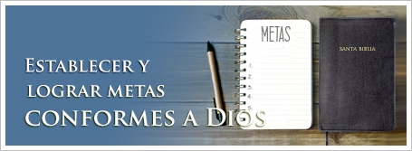
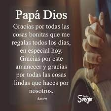

mi proyecto de vida
¿QUIEN SOY?
Soy Toshio Joel Estevez Vargas , Tengo 29 Años, nací el inoa de San josé de la mata , santiago. El en años 1991 Estudio Agrimensura el cursa uasd casi finalizando , soy tecnico en electricidad Industrial, y Reparacion de computer etc. Soy una Persona humilde y simpático agradecido por lo que Dios me da el la vida , tengo mucha Fe el cristo jesús. Soy una persona compaciente.
Cosas que me hacen feliz
1.Cuando haga oraciones o comunicación cristo o Dios me escuchar.
2. Estar con familia y compartir.
3.Ir a la iglesia los sabado.
4.Comer.
5. Hacer deporte.
6. Salir disfrutar de la naturaleza.
8. poder compartir con amistades
9. Ser solidario
Cosas que me hacen enojar
1.Que hablen con tono de agresividad.
2.Que hablen con tono de prepotencia.
3.Que me manden mucho.
4.Que me réclamer cosa que no son.
5.Que violen la ley de dios
6.Que violen la ley de tránsitos
Qué me hace único/a?

1 Bueno mi forma de ver la vida diferente a los demás.
2. Mi fe en cristo firme todo el tiempo.
3. No me preocupo mucho por cosa que no tiene ningún sentido.
4. Mi solidaridad.
5. Mi humildad.
6. Mi valores y principio.
7. Mi alegria sobre la vida.
8. Mi autoconciencia.
9. Mi gratitud.>
Test de Personalidad
Test de Inteligencias Múltiples
Mis Virtudes
.png)
Mis Metas
 1.Estar lo más cerca de la vida eterna y Cristo Jesús y ser como el
2.Terminar mi carrera universitaria.
3.Cada persona que conozco
,4.servir pichando al nivel profesional otra vez.
5.tener mi propia empresa.
6.Ser un instrumento Dios para obrar el la persona. 7.Ser maestro universitario etc.. 8.Ser más comprensivo con la persona. 9.tener mi propia casa 10.tener varia tarea de tierra.Metas a corto plazo
1.Cada persona que conozco , conozcan de Cristo Jesús.
2.ser más comprensivo con la persona.
3.tener varia tarea de tierra.
Metas a Mediano plazo
4.Quiero seguir practicando béisbol, para servir pichando al nivel profesional otra vez.
5.tener mi propia empresa.
6. Ser un instrumento Dios para obrar el la persona.
Largo plazo
7.Ser maestro universitario etc..
8.Ser más comprensivo con la persona.
9.tener mi propia casa
10.tener varia tarea de tierra.
Agradecimiento
Le Agradezco primero a dios y cristo por todo lo regalo de la vida que han dado. También y padre y madre por sus apoyo . También a mi hermosa esposa por su paciencia y amor hacia mi persona. a la persona que siempre orar mi bienestar que Dios me lo bendiga.. 